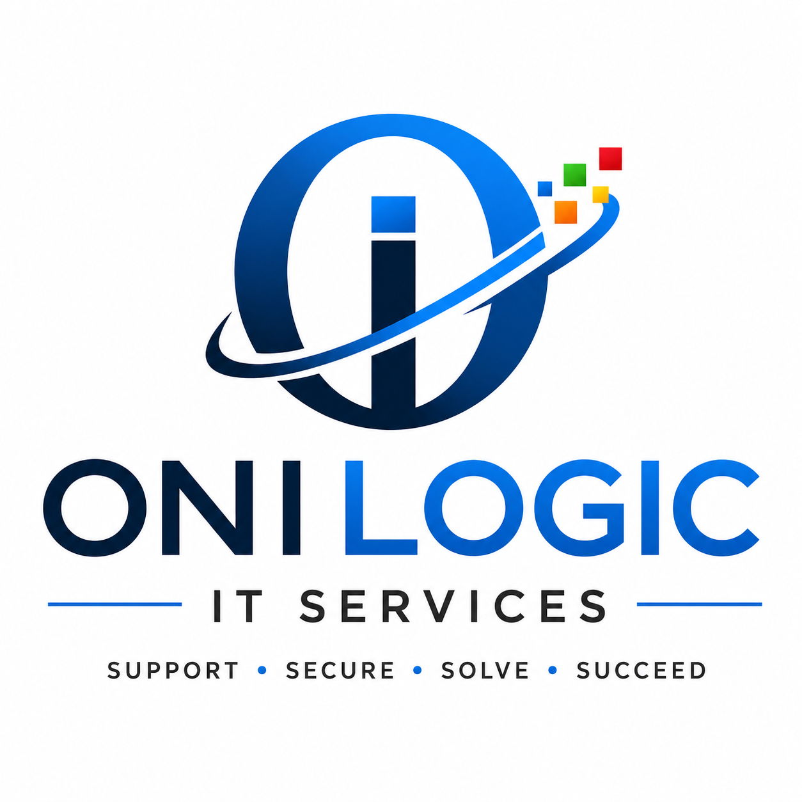

Reliable IT Support & Cybersecurity for Small Businesses
Contact UsReliable remote and onsite IT support for businesses, organizations, and professionals.
User management, Outlook support, Teams setup, password resets, and MFA configuration.
Basic cybersecurity setup, account protection, security awareness, and business security guidance.
Wi-Fi troubleshooting, router setup, printer connectivity, and office network support.
Website setup, updates, SSL configuration, and small business website maintenance.
Fast remote troubleshooting and technical support using secure remote assistance tools.
Onilogic IT Services provides dependable IT support, Microsoft 365 administration, cybersecurity support, and technology solutions for small businesses, schools, churches, and organizations.
Our mission is to help businesses stay secure, connected, and productive through reliable technology support and modern IT solutions.
📧 kamouzougan@onilogic.com
💻 Onilogic IT Services
Reliable IT Support & Cybersecurity